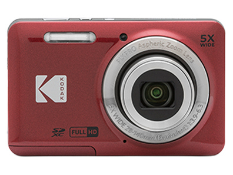
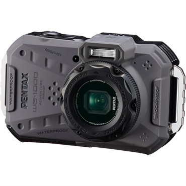
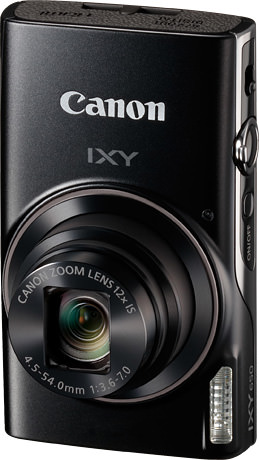
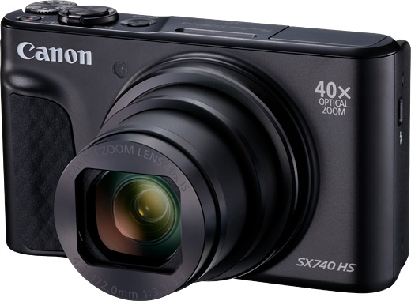

もくじ
コンデジという選択肢
「カメラに興味はあるけど、レンズ交換とか面倒そう」。正直、自分もそう思っていた。ミラーレス一眼はレンズを選ぶ楽しさがある反面、初期費用もかさむし、持ち歩くのに気合がいる。
そこで改めて見直したのが、コンパクトデジタルカメラ（コンデジ）。レンズは固定、電源を入れてシャッターを切るだけ。スマホより「カメラで撮っている」感覚があるし、ポケットに入るサイズのものも多い。
ただし正直に言うと、5万円以下の新品コンデジのセンサーサイズは1/2.3型が中心で、最新スマホとほぼ同等。ヨドバシ.comの特集記事でも「入門向けコンデジより、スマホのほうが高画質になることがある」と率直に書かれている。画質だけを求めるなら、スマホで十分なケースも多い。
それでもコンデジを選ぶ理由があるとすれば、「光学ズーム」「防水」「フィルムっぽい写り」「シャッターを切る体験」といった、スマホでは代替しにくい部分。今回は、そうした「選ぶ理由」がはっきりしている4機種を調べてまとめた。
① KODAK PIXPRO FZ55 ─ 2万円台のSNS人気機
KODAK PIXPRO FZ55

約1600万画素 ／ 光学5倍ズーム ／ 約119g ／ フルHD動画
新品：約22,000円SNSで「エモい写真が撮れる」と話題になったコンデジ。価格.comの売れ筋ランキングでも常に上位に入っている。Amazonのスクリーンショットに閲覧履歴が表示されているのを最近見た人も多いはず。
Shutter Loopのレビューでは「スマホでは味気ないけど、一眼まではいらない場面にちょうどいい」と評されている。CCDセンサー特有の発色は、加工せずとも少しレトロな雰囲気が出る。
② PENTAX WG-1000 ─ 防水15m・耐衝撃の全天候カメラ
PENTAX WG-1000

約1600万画素 ／ 光学4倍ズーム ／ 約198g ／ フルHD動画 ／ 防水15m・耐衝撃2m
新品：約32,000円水深15mまでの防水、2mからの落下耐衝撃、防塵IP6Xという「壊れにくさ」に全振りしたカメラ。海水浴、スキー、キャンプなど、スマホを濡らしたくない・落としたくない場面で活躍する。価格.comの売れ筋ランキングでもアウトドアカメラとして安定的に上位にいる。
③ Canon IXY 650 ─ 光学12倍ズームの定番コンデジ
Canon IXY 650

約2020万画素 ／ 光学12倍ズーム ／ 約147g ／ フルHD動画 ／ Wi-Fi・NFC
新品：約47,000円Canonの定番コンデジシリーズ「IXY」の現行モデル。147gという軽さに光学12倍ズームを詰め込んでいる。価格.comでは満足度4.2で、口コミでも「普段使いに不足なし」という評価が多い。
④ Canon PowerShot SX740 HS ─ 光学40倍の旅カメラ
Canon PowerShot SX740 HS

約2030万画素 ／ 光学40倍ズーム ／ 約299g ／ 4K動画 ／ Wi-Fi・Bluetooth
新品：約48,000〜50,000円光学40倍ズーム（24-960mm相当）という圧倒的な望遠性能を持つ「高倍率ズームコンデジ」。旅行先で遠くの建物を引き寄せたり、運動会で子どもの表情をアップで撮ったりと、ズームが必要な場面で真価を発揮する。4K動画にも対応。
4機種を比較してみた
| KODAK FZ55 | PENTAX WG-1000 | Canon IXY 650 | Canon SX740 HS | |
|---|---|---|---|---|
| 新品価格 | 約22,000円 | 約32,000円 | 約47,000円 | 約48,000円 |
| 画素数 | 約1600万 | 約1600万 | 約2020万 | 約2030万 |
| 光学ズーム | 5倍 | 4倍 | 12倍 | 40倍 |
| 重さ | 約119g | 約198g | 約147g | 約299g |
| 手ブレ補正 | × | 電子式 | 光学式 | 光学式 |
| 4K動画 | × | × | × | ○ |
| Wi-Fi | × | ○ | ○ | ○ |
| 防水 | × | ○（15m） | × | × |
| 向いている人 | 気軽なスナップ | アウトドア | 日常の万能機 | 旅行・運動会 |
「安くて軽くて、とりあえず1台持ちたい」ならFZ55。「海やキャンプに持っていく」ならWG-1000。「ズームも画質もバランスよく」ならIXY 650。「とにかく遠くを撮りたい」ならSX740 HS。用途がはっきりしていれば、選択は意外と迷わない。
コンデジ vs 中古ミラーレス、どっちを選ぶ？
同じ5万円以下の予算なら、中古のミラーレス一眼も選択肢に入る。結局どっちがいいのか、自分なりの整理はこうなった。
| コンデジ（新品） | 中古ミラーレス | |
|---|---|---|
| サイズ・重さ | ポケットに入る | カバン必要 |
| 操作の複雑さ | ほぼオートで撮れる | 設定を覚える余地あり |
| 画質 | スマホと同等〜やや上 | スマホを明確に超える |
| 拡張性 | レンズ交換不可 | レンズを変えて楽しめる |
| 保証・安心感 | 新品なのでメーカー保証あり | 中古のため店の保証のみ |
「カメラで撮る体験を手軽に味わいたい」ならコンデジ、「写真を趣味として続ける予感がある」なら中古ミラーレス、という分け方が一番わかりやすいと思う。
よくある質問
コンデジとミラーレス一眼の違いは何ですか？
コンデジはレンズが本体に固定されていて交換できません。そのぶん小型軽量で、設定もシンプルです。ミラーレス一眼はレンズを交換できるため表現の幅が広がりますが、本体もレンズも大きく重くなります。「まずカメラで撮ること自体を試したい」ならコンデジ、「写真を趣味として深めたい」ならミラーレスが向いています。
スマホのカメラとコンデジ、どちらが綺麗に撮れますか？
5万円以下のコンデジのセンサーは1/2.3型が主流で、最新スマホと同等か小さいこともあります。日中の屋外ならスマホと差を感じにくいケースも。コンデジの強みは光学ズームと「カメラのシャッターを切る」操作感です。画質だけで判断するならスマホで十分な場合も多いので、「カメラで撮る体験が欲しいか」で決めるのがおすすめです。
Wi-Fiがないコンデジからスマホに写真を送る方法は？
SDカードリーダーを使います。USB-C対応のものなら1,000円前後で購入でき、AndroidスマホやiPadに直接差し込めます。Lightning端子のiPhoneの場合は、Apple純正のLightning-SDカードリーダーか、USB-Cタイプのカードリーダーを使います。
安い中華製コンデジはどうですか？
Amazonで「デジタルカメラ」と検索すると1〜2万円台の中華製コンデジが大量に出てきます。スペック表示は派手ですが、画質はスマホを下回ることが多く、価格.comの口コミでも「この価格なら納得だが画質は期待しないほうがいい」という声が目立ちます。「壊れても惜しくない」用途ならアリですが、画質を求めるなら今回紹介した国内メーカー品のほうが確実です。